A small device on the pump, a record signed by satellite time, and a platform that flags the litre that went missing — before the register is even closed. Designed, written and built in India by one team.
Four days at Depot 4. On the left, how it was kept. Keep scrolling and the same four days appear as Signal keeps them: signed, timed by India's own satellites, and with the missing 38 litres flagged before anyone asked.
Handwriting, a question mark, a signature nobody can verify.
The rows keep their places. The facts change owner.
Every litre signed and timed. One drain flagged. Five-year history.
Furnaces, drives and scales that were never designed to share. An IIoT Bridge in the panel speaks their languages, keeps a log when the network drops, and sends every reading to Signal — or to the SCADA you already run.
Five vehicles, one handheld, no carrier. NavIC positioning, a private radio mesh and an on-vehicle record that syncs at the depot. Fielded with the Indian Army; nothing leaves your perimeter.
Every crate gets a sealed shelf-life label at receiving. The scanner at the bin picks the oldest first, automatically, and AID-ERP keeps 5,000 SKUs at zero variance across branches.
Signal is the platform behind every chapter — the fuel ledger, the furnace history, the convoy map. Hosted by us or installed on your own servers; it works with our devices and with the equipment you already own.
See every machine live, without re-wiring the plant. IIoT Bridge · Signal.
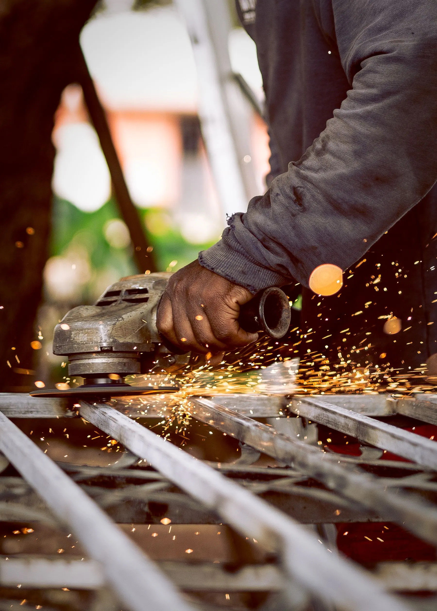
Every litre and every vehicle accounted for — even with no network. AID-Fuel · VMS-O · VFMS-O.
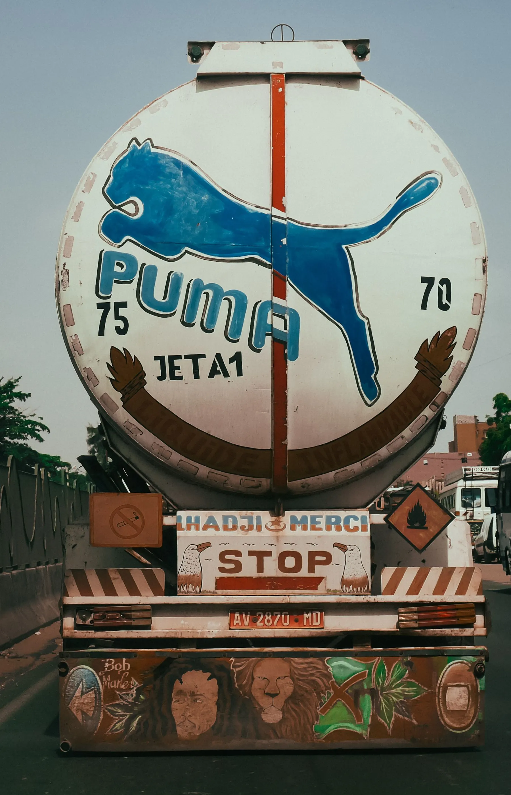
Indigenous systems that never depend on a public network. NavIC CMS · TrackNet · Counter-UAS.
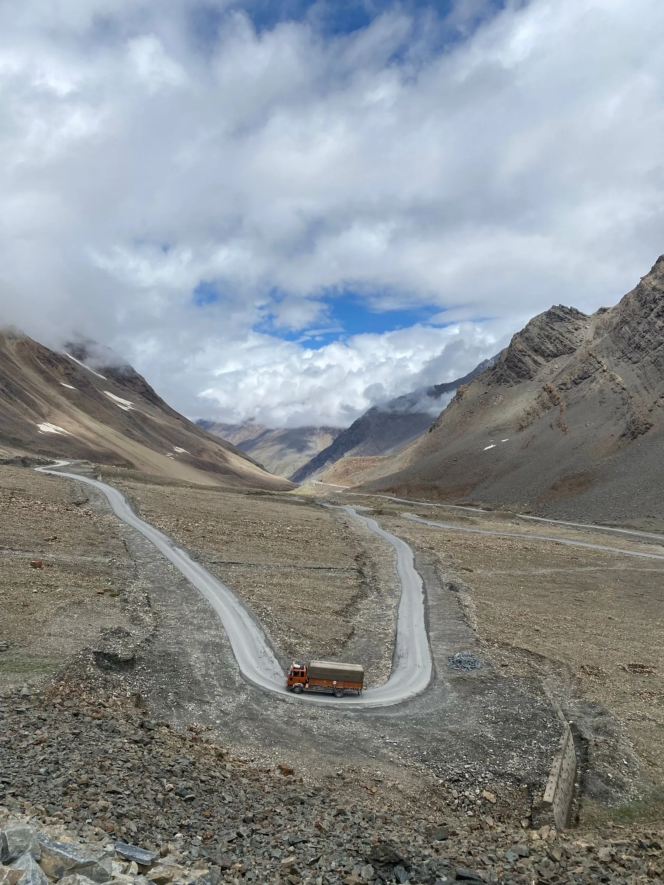
Pick first-to-expire first; know the temperature the whole way. AidFresh · AID-ERP.
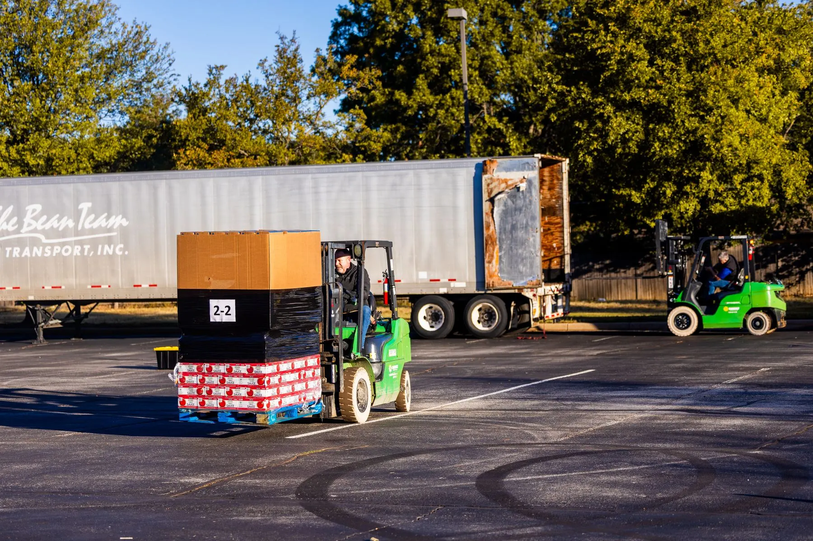
Cashless, stock-aware machines you run from one screen. Vending controller · Vending cloud.
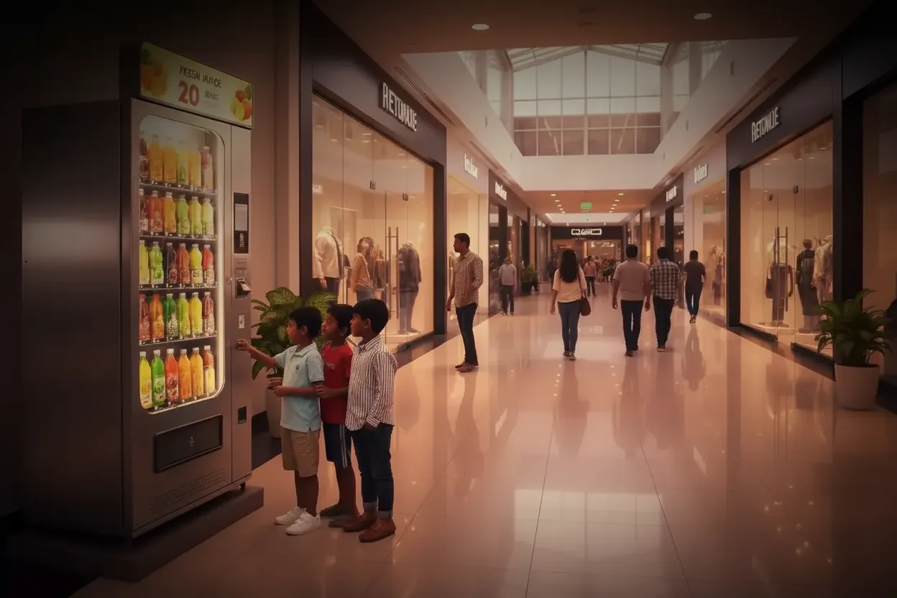
Hands-on drone, PCB and IoT programmes for institutions. TraceCraft · Drone programmes.
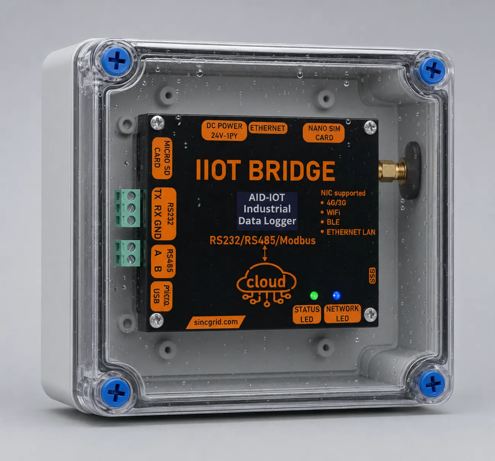
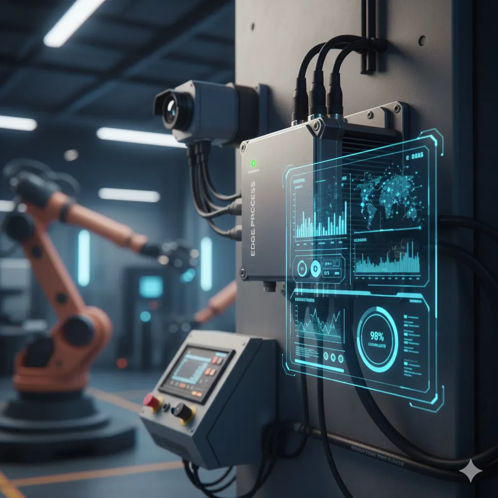
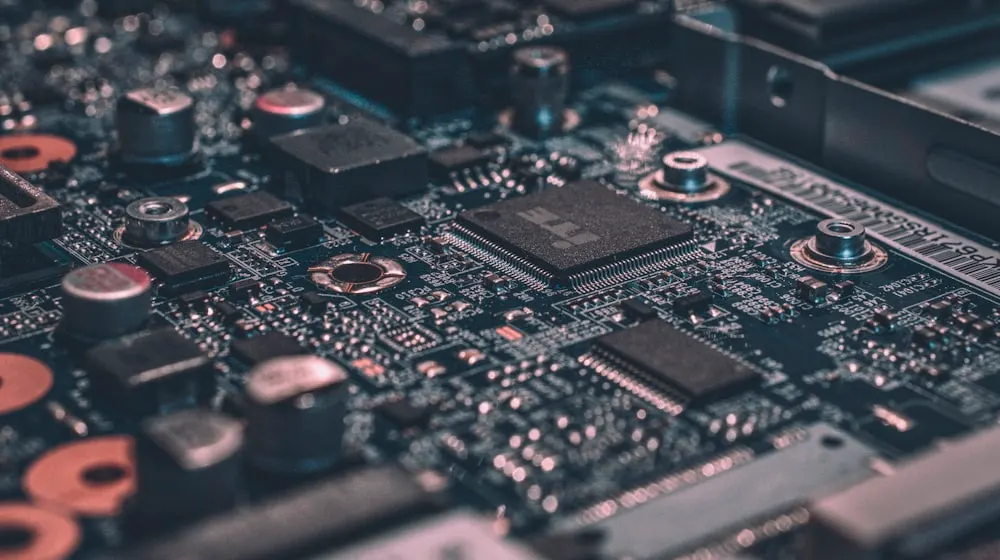
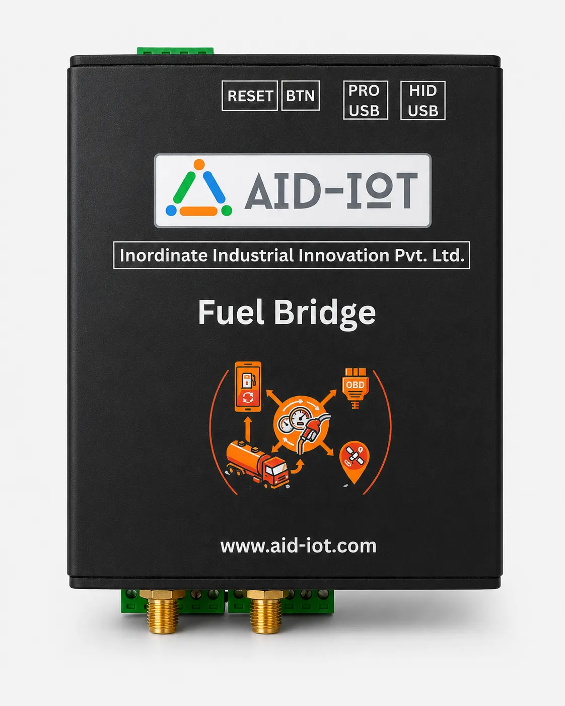
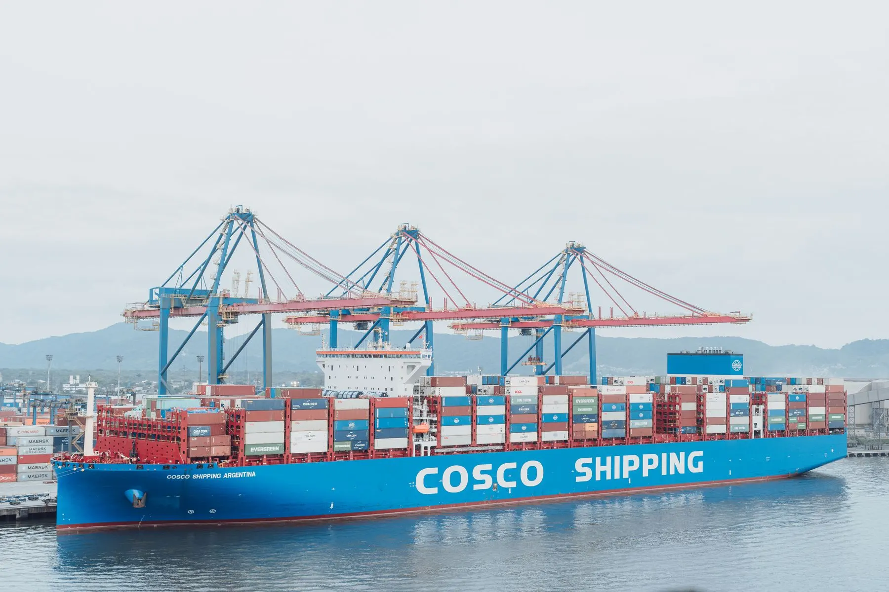
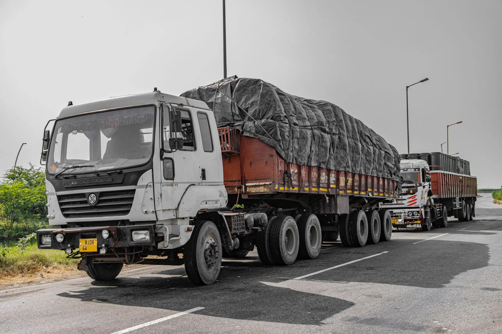
Tell us what you operate and what is going wrong. You'll hear from an engineer — not a sales desk — within one business day.
 AID-IoT
AID-IoT